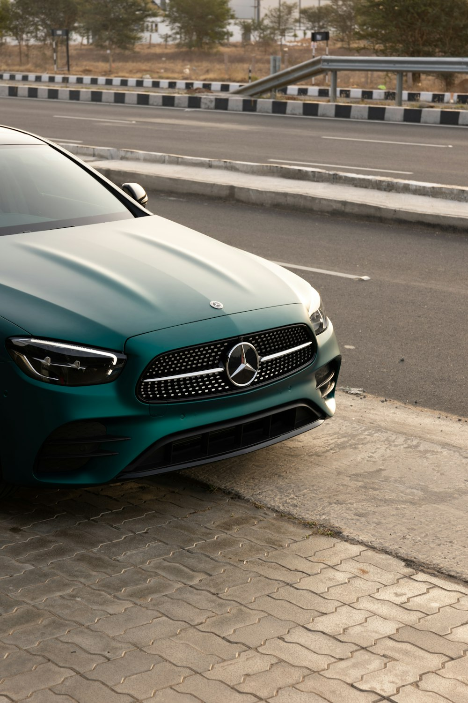
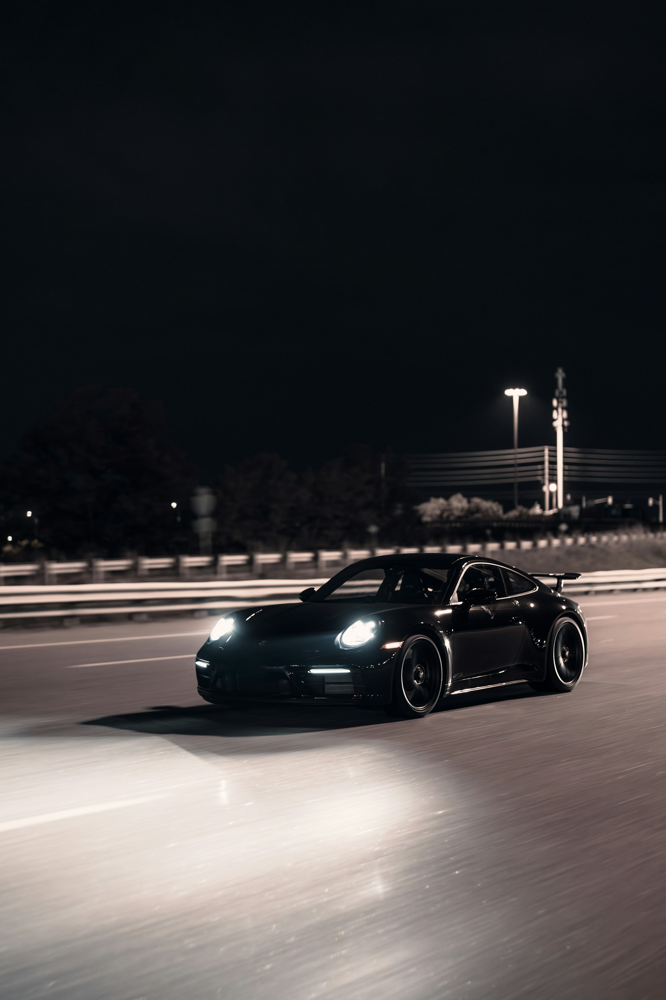
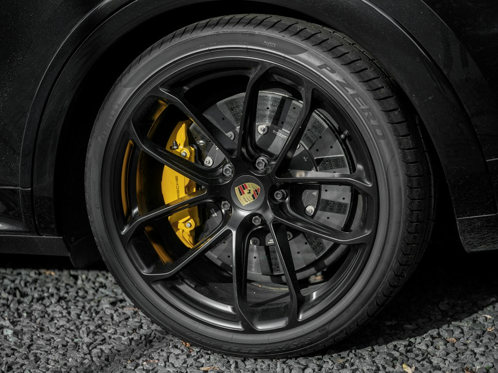
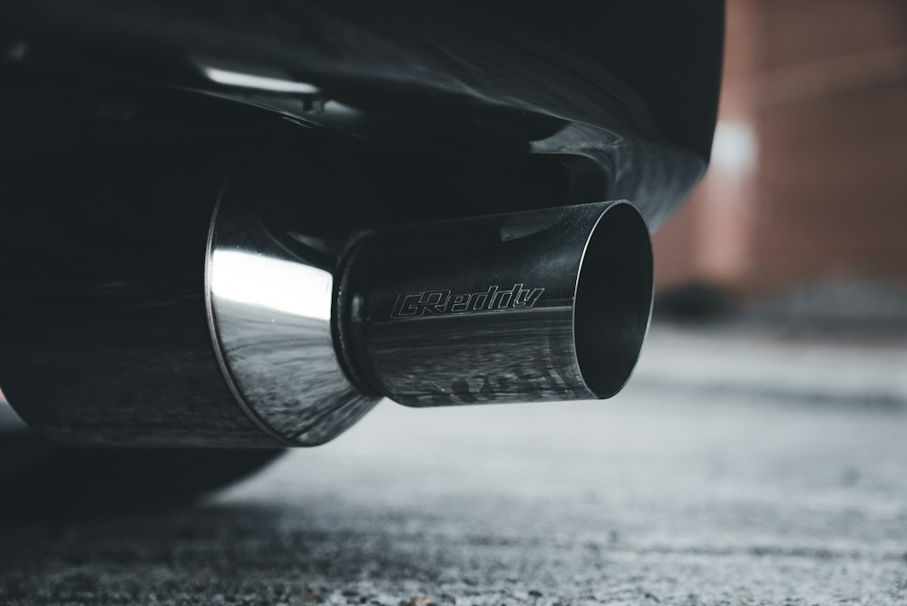

컬러 랩핑
Colour
전체 컬러 변경부터 부분 포인트까지.
원하는 색과 마감을 함께 정합니다.


전체 컬러 변경부터 부분 포인트까지.
원하는 색과 마감을 함께 정합니다.

휠의 디자인과 비율을 중심으로.
차량 규격에 맞는 외관을 상담합니다.

배기와 디테일, 작업 범위까지.
원하는 방향을 구체적으로 정리합니다.
포르쉐 컬러 랩핑.
실버에서 레드로.
외부 시공 참고 · Monarch Media Designs ↗
촬영 각도가 다른 비교 자료입니다. NEO TUNING의 시공 실적이나 고객 후기가 아닙니다.
차종과 관심 있는 작업을 선택해
상담할 내용을 미리 정리해보세요.
체험용 미리보기입니다.
입력한 내용은 저장하거나 전송하지 않습니다.